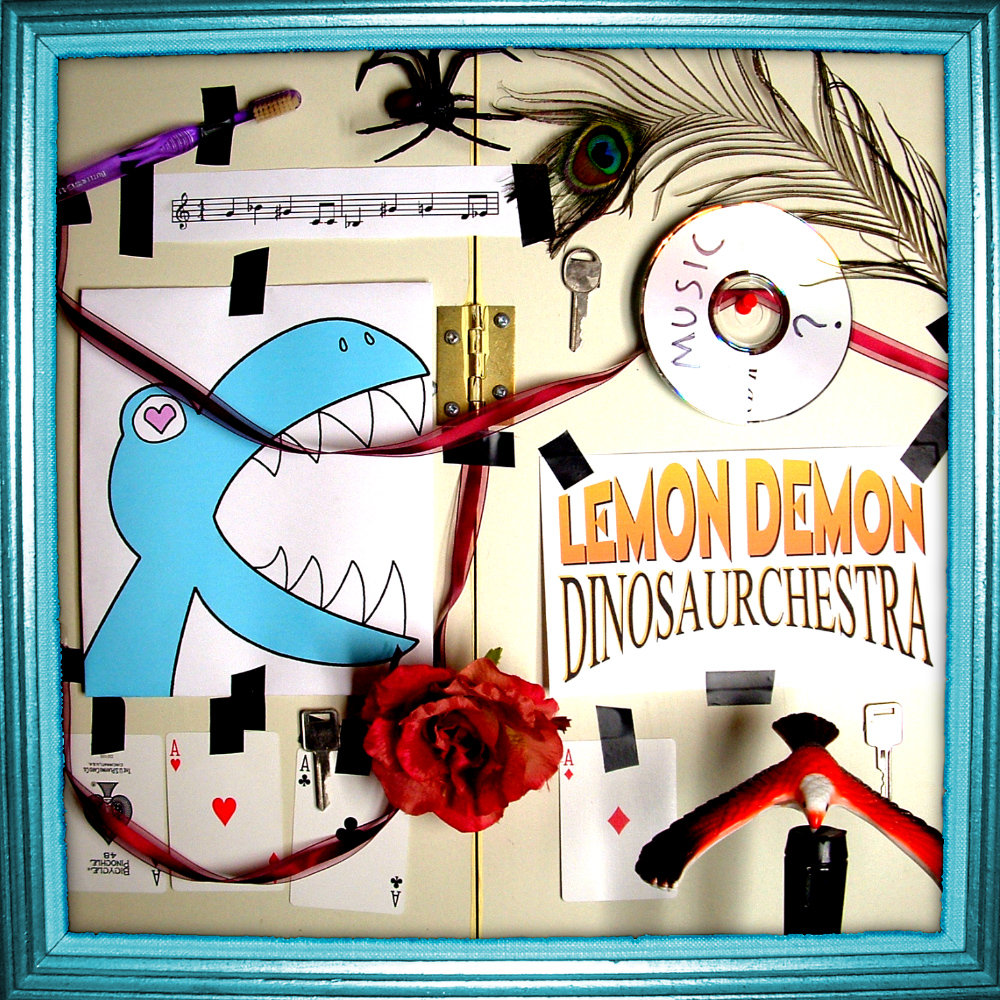

Dinosaurchestra - Lemon Demon
A album guaranteed to be unknown to anyone living outside of the internet during the mid-2000s (even if you were, it's still unlikely).
A nostalgic album from old school internet content creator Neil Cicierega, who has created an assortment of music/short films ranging from Harry Potter Puppet Pals to The Ultimate Showdown of Ultimate Destiny (which is found on this album; track #6).
Favorite song: This Hyper World or Deep in the Ocean